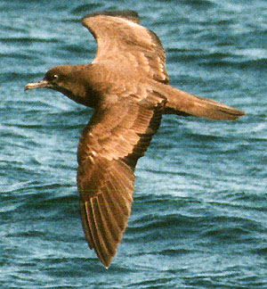

| These photographs accompany records that have been recently submitted to the committee. This record
has been ACCEPTED. Wedge-tailed Shearwater Puffinus pacificus 10 Oct. 1998, Monterey Bay, SCZ 1998-162 © 1998 Eric W. Greisen  Wedge-tailed Shearwater Puffinus pacificus 10 Oct. 1998, Monterey Bay, SCZ 1998-162 © 1998 Eric W. Greisen Wedge-tailed Shearwater Puffinus pacificus 10 Oct. 1998, Monterey Bay, SCZ 1998-162 © 1998 Eric W. Greisen Back to CBRC Rare Bird Photos |